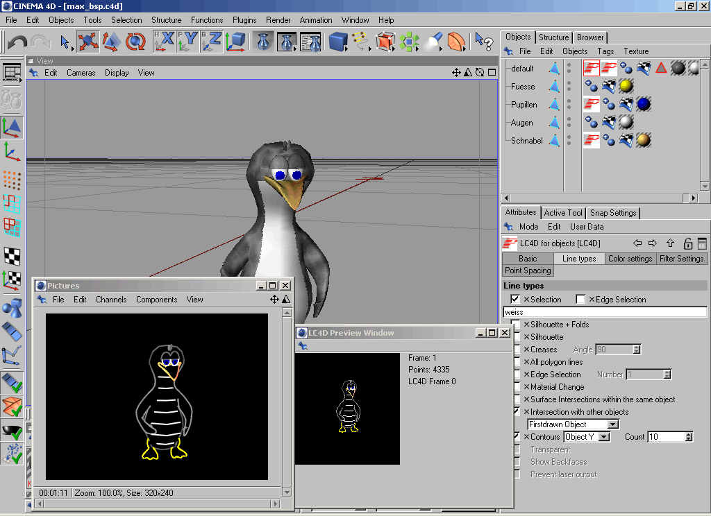

Aplikační software
Aplikace jsou uživatelské programy určené pro jeden nebo více specifických účelů. Pro spouštění aplikací je nezbytná přítomnost základního software - operačního systému.
Kancelářské balíky
Symbolický „balík“ programů obvykle tvoří textový pro cesor, tabulkový procesor, nástroj na tvorbu prezentací, databázový systém, někdy i groupwarové nástroje (systémy organizování času, zajišťování schů zek), grafické editory apod. Vedle komerčních Microsoft Office či Apple iWork existují také balíky OpenOffice nebo WPS Office, dostupné zdarma a pro řadu platforem.
Grafické aplikace
Oblast grafiky je velmi široká; grafické programy umožňují vytvoření grafických dokumentů přímo v počítači, skenování papírových před loh i zachycení obrazu digitálním fotoaparátem. Dominantní postavení v této oblasti zaujímá profesionální software firmy Adobe (např. Adobe Photoshop, Adobe Illustrator aj.). Mezi oblíbené multiplatformní opensource grafické ap likace patří např. rastrový editor GIMP nebo vektorový Inkscape. Svébytné oblasti počítačové grafiky tvoří programy pro tvorbu animací, rozsáhlé kon strukční systémy CAD (Computer Aided Design) nebo programy DTP (Desktop Publishing) určené pro tvorbu tiskovin.
Multimediální programy
Umožňují vytváření, zpracování a prezentaci mul timediálních, tedy především audiovizuálních dat na počítači. Kromě nejrůz nějších multimediálních přehrávačů zde můžeme zařadit řadu programů pro editaci digitálního zvuku nebo videa, programy pro tvorbu multimediálních pre zentací, výukové programy, ale také rozsáhlou oblast počítačových her.
Programy pro komunikaci v počítačové síti.
Slouží pro správu počítačo vých sítí, vzdálené řízení počítače, přenos a přístup ke vzdáleným souborům a vzdálený tisk, pro připojení vnitřní podnikové sítě (intranet) na síť celosvětovou (Internet) přes poskytovatele Internetu. K základním uživatelským (klientským) aplikacím patří webové prohlížeče, klienty elektronické pošty a groupware (software pro skupinovou práci), prostředky online komunikace (IM - Instant Messaging) a jiné.
Informační a databázové systémy
Informační systémy (IS - information sys tems) představují komplexní programové vybavení určité instituce nebo firmy. Základem IS jsou obvykle tzv. datové sklady (data warehouse) založené na databázových systémech. Podnikové informační systémy bývají označovány zkratkou ERP (Enterprise Resource Planning) a jsou tvořeny celou řadou díl čích programových modulů (např. moduly pro výrobu, logistiku, správu ma jetku, účetnictví ...) K lídrům v oblasti informačních i databázových systémů patří velké firmy jako Oracle, Microsoft, IBM, SAP. Kromě komplexních IS jsou vyvíjeny mnohé specializované aplikace pro podporu výrobních procesů, eko nomických transakcí a nejrůznějších jiných pracovních činností
Malware a antivirové programy
Zatímco malware je počítačový program určený ke vniknutí nebo poškození počítačového systému, cílem antivirových programů (např. AVG, AVAST, ESET, Kaspersky Antivirus atd.) je chránit počí tačové systémy před tímto nežádoucím softwarem
Integrovaná vývojová prostředí
Obvykle jsou označována zkratkou IDE (In tegrated Development Environment) a používají je programátoři k vývoji aplika cí. Tradičně je tvoří editor s různými pomůckami pro psaní programového kódu, ladicí prostředky, překladače a další nástroje zefektivňující práci vývojářů.